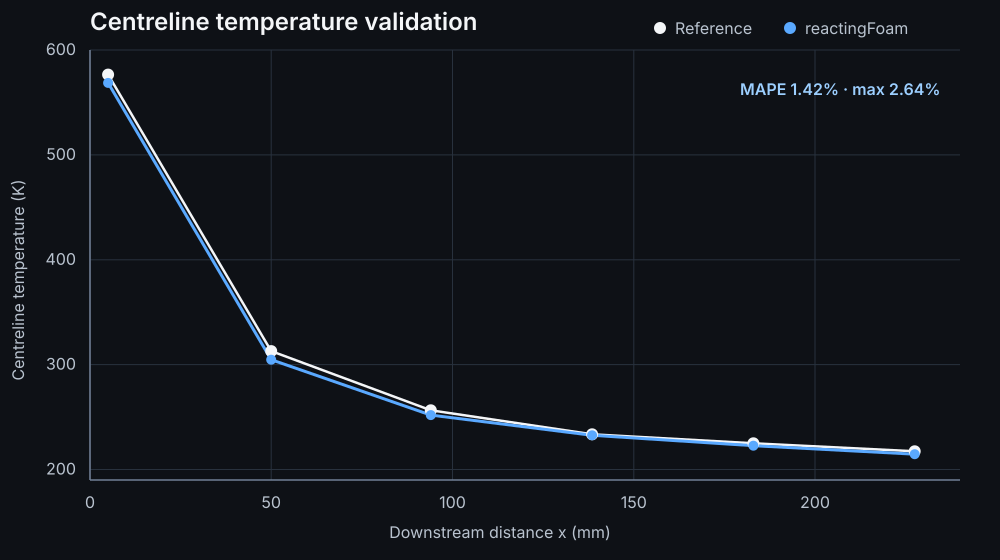

Overview
This project was conducted at the University of Toronto Institute for Aerospace Studies in the Propulsion and Energy Conversion Laboratory under Professor Swetaprovo Chaudhuri, with day-to-day mentorship from Dr. Rajat Sawanni. The work develops an OpenFOAM framework for contrail-relevant turbulent exhaust mixing, progressing from lower-cost validation models toward a three-dimensional large-eddy simulation.
The physical problem is deceptively difficult. Hot, moist exhaust entrains cold ambient air, so both temperature and water-vapour concentration fall as the plume mixes. Saturation vapour pressure, however, falls nonlinearly with temperature. Local regions can therefore become supersaturated even as the exhaust is being diluted. The project isolates this fluid-dynamic and thermodynamic stage before introducing soot, ice microphysics, latent heat, or particle dynamics.


Why large-eddy simulation?
RANS and URANS are useful for validating geometry, boundary conditions, thermodynamics, and mean plume development, but they represent turbulence through statistical averaging. That is a major limitation for contrail inception: a mean temperature field can look correct while missing the instantaneous temperature–vapour combinations that cross the nonlinear saturation boundary.
LES instead resolves the energetic three-dimensional turbulent structures and models only the smaller unresolved motions. The objective is to capture shear-layer roll-up, entrainment, vortex interaction, three-dimensional breakdown, and unsteady scalar transport so that supersaturation can eventually be studied as a fluctuating field rather than only as a mean quantity.
Core modelling question: can a numerically stable LES reproduce not only the mean plume, but also the instantaneous joint fluctuations of temperature and water vapour that govern localized supersaturation?
Thermal validation
I first built progressively more representative compressible jet cases before committing to the cost of LES. A planar representation consistently overpredicted downstream centreline temperature, with mean errors around 40%. Changing inlet turbulence parameters did not resolve the discrepancy, pointing instead to the entrainment physics of the planar geometry.
Replacing the planar model with a five-degree axisymmetric wedge produced a major improvement. Using reactingFoam with chemistry disabled as a compressible, multicomponent air–water-vapour solver, the final wedge case reproduced the available centreline temperature measurements with a 1.42% mean absolute percentage error and a maximum error of 2.64%.

Water-vapour transport was also checked for bounded mass fractions, mixture consistency, and physically sensible plume decay and spreading. Those checks establish numerical consistency, not independent experimental validation of the H₂O field.
Bypass-flow study
The validated axisymmetric framework was extended with an annular bypass stream to study how turbofan-like bypass conditions alter plume cooling, vapour dilution, and ice supersaturation. I ran a nine-case matrix spanning bypass ratios of approximately 2.50, 5.95, and 10.0, each at bypass temperatures of 240, 270, and 300 K.
The strongest trend was bypass temperature: colder bypass flow cooled the plume faster, increased the ice-saturation ratio, and moved the first centreline location with Si > 1 upstream. Increasing bypass ratio produced the same upstream shift at fixed temperature, but with a competing penalty of stronger water-vapour dilution.

| Bypass temperature | BPR ≈ 2.50 | BPR ≈ 5.95 | BPR ≈ 10.0 |
|---|---|---|---|
| 240 K | 4.92 | 7.63 | 11.09 |
| 270 K | 2.60 | 3.39 | 4.46 |
| 300 K | 1.43 | 1.62 | 2.01 |
At x = 0.183 m, increasing BPR from ≈2.5 to 10 reduced centreline temperature by roughly 13–15 K while reducing core-derived water-vapour mass fraction by roughly 60–65%. Over this developing-plume region, the cooling effect dominated the supersaturation response. Absolute supersaturation values are model-dependent because the bypass and ambient streams were treated as dry air.
Three-dimensional LES development
The three-dimensional model uses a structured cylindrical O-grid designed from the developed RANS field. Refinement was concentrated around the expanding core–ambient shear layer rather than distributed uniformly. After several iterations of mesh-quality diagnosis and redesign, the production mesh contained exactly 14,272,512 cells, including 128 azimuthal divisions and 808 axial cells.
.png)
.png)
The most difficult part of the project became solver stability. Pressure-based LES calculations developed a travelling velocity–pressure runaway when velocity shear and thermal/density shear were present together. I systematically tested mesh changes, inlet regularization, convection schemes, RANS initialization, filter widths, and WALE, Smagorinsky, and dynamicKEqn subgrid closures. These changes altered the growth rate, but none eliminated the failure.
Thermal/density shear only: stable 0.1 ms
SST RANS with both: stable 35 ms
Passive H₂O: reconstructed through 4.35 ms after RANS → LES switch
The control matrix weakened species transport, one defective cell, boundary-condition type, and any single SGS model as complete explanations. Switching to the density-based rhoCentralFoam formulation with a Kurganov central-upwind flux produced the first tested 3D LES route that remained bounded with both velocity and thermal/density gradients present.
Production and diagnostic cases ran on the Trillium high-performance computing cluster using 192 MPI ranks across three nodes, with adaptive timestepping constrained to a maximum Courant number of 0.3.
Supersaturation post-processing
The LES is ultimately a means to reconstruct the thermodynamic state experienced by the turbulent plume. From each cell's temperature, water-vapour mass fraction, and absolute pressure, the analysis converts mass fraction to mole fraction, evaluates vapour partial pressure, and computes saturation ratios over ice and liquid water.
The next statistical layer is intentionally broader than a single contour: instantaneous and mean Si fields, centreline and radial profiles, fluctuation variance, probability-density functions, and joint temperature–water-vapour PDFs. These diagnostics are needed because the tails of the joint distribution—not only the mean—can determine whether localized regions become supersaturated.
Important limitation: this framework currently diagnoses thermodynamic supersaturation; it does not yet model soot activation, ice-particle populations, latent heat, or depletion of vapour through condensation and deposition.
Interpretation & next steps
The project reinforced a distinction that is central to turbulence modelling: matching a mean field is necessary, but it is not sufficient evidence that the fluctuation physics is correct. The 1.42% thermal-validation error established a credible mean-flow baseline, while the LES work exposed the much harder numerical problem of resolving compressible, variable-density shear without introducing a solver-driven runaway.
The density-based LES provides a workable path forward, but stability is not the same as accuracy or statistical convergence. The next step is to extend the bounded run far enough to identify a developed sampling interval, then quantify scalar fluctuations and supersaturation statistics and compare LES means back against the validated lower-order model.
This page summarizes the August 14, 2026 summer research report and presents interim LES results as such; the reported instantaneous LES fields were not yet time-averaged or statistically converged.